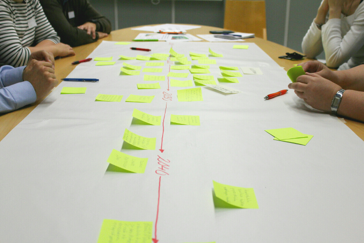
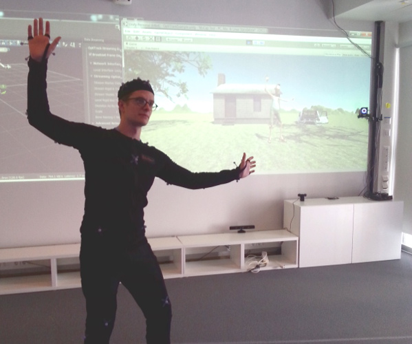
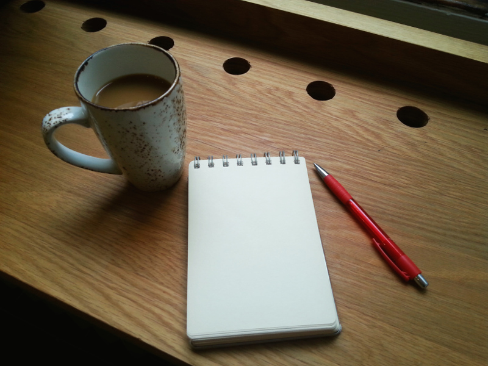
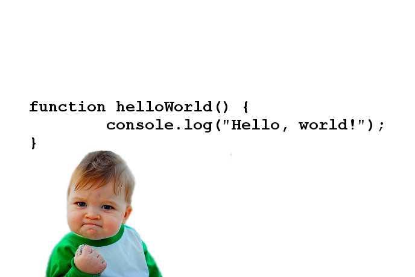
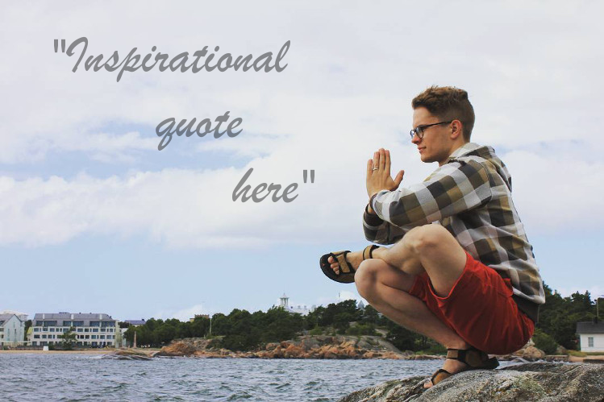
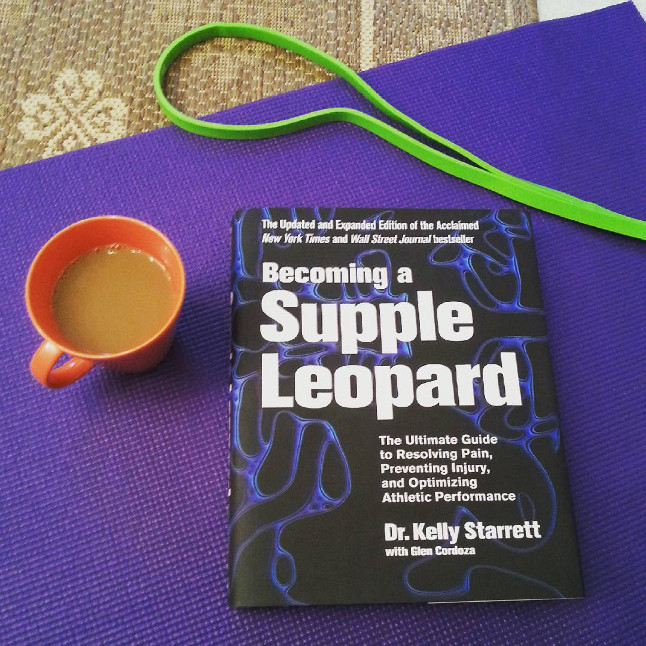
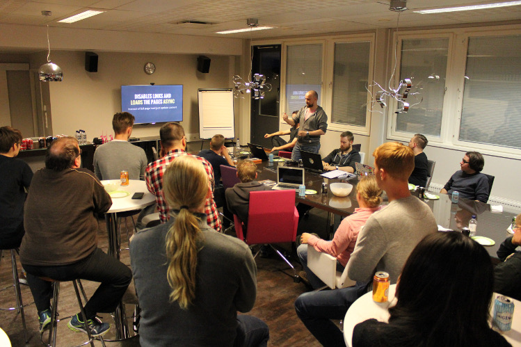

Antti Pitkänen

Who am I?
Marketing and project freelancer, BBA, Computer Science student, wannabe web developer, writer, musician and all-around nice guy from Tampere, Finland.
I consider myself a creator – I create content, code, networks and music.
Skills
- Marketing and communication
- Creativity and problem solving
- Web development
- Networking and events
- Music and performing
Interests
- Coding
- Physiotherapy
- Happiness
- Virtual reality
- Community contribution
Cooperation and networking
I believe that people can achieve more by working together.
Bringing people together
Currently I'm doing various freelance project work along with studying. The projects I'm involved in have mostly to do with marketing, event organizing, innovation and communication.
Whether it is marketing or innovation it always comes down to bringing people together to achieve more together than anyone could on their own.
I don't enjoy doing traditional sales or straight-on advertising. What I do enjoy however is bringing solutions to problems and informing people about something useful. Whatever I do must benefit people in some way.
Good service is something that I value highly and want to implement in everything I do.
Creating something new
What I find most exciting is to be involved in creating something new. Whether it is a product, a service, an innovation or a discovery, I'm in.
"New" doesn't have to be something futuristic and highly technological. It can be a new way of utilizing existing things, a new way of bringing different talents together or a new way of approaching an old process.
To me something is new as long as it is something that creates new value and benefit for people.
Writing
Writing is a powerful tool for communicating simple ideas to a broad audience. I don't consider myself an excellent writer by any means, but I feel that I can get my thoughts across quite efficiently. Besides, I simply like writing as well as reading.
One of the topics that I've been writing about is how to develop the Finnish reqruitment process and how to get right people to meet the right jobs. I've written on the subject on my Linkedin blog and on the blog of Uratehdas.
Coding and web
For me coding is a way of expressing myself and creating awesome things out of thin air.
What I do
The thing I like most about coding is seeing the outcome in action. Starting out with nothing and ending up with something that actually works – what could be better?
I like to build things that can be seen and interacted with, which is why I'm most into web and front-end development. Having background with business and marketing I believe that every solution should exist to serve the user and make the user experience better. That's why I'm a big fan of user-centered design.
I'm also one of the organizers of the TampereJS meetups.
My code and stuff

I'm studying Computer Science at the University of Tampere. I spend most of my free time doing small projects, such as building web pages (like this one!) and learning about the latest technologies.
JavaScript and Node-based technologies are what I like to use most. React rocks for UI development. The syntax of Ruby is lovely. Who wants to write CSS with SASS available?
Visit my GitHub page to see my code including the source code for this page.
Where I started
I originally took up coding with the help of Codecademy and would recommend it for anyone wanting to give coding a go.
Further resources that helped me a lot were The Odin Project, Level Up Tutorials, devwalks and mooc.fi, and I would recommend those to anyone wanting to start learning.
For the design side of things I really enjoy the approach of DevTips.
Wellbeing
One of the things I value the most is both physical and mental wellbeing.
Motivation and purpose
I am a big advocate of positive psychology, happiness and mindfullness.
Hard work doesn't result in happiness – happiness results in hard work. People have the capacity to spend enormous amounts of effort on doing things they care about and find interesting. So why do people work jobs they don't want to, in working environments where they are treated badly and not motivated?
I believe that everyone should set their own goals and dreams and work actively towards them. Companies should do everything in their power to make their employees feel appreciated and supported in what they do. A more motivated and supported employee is happier and therefore also more productive.
For more insight into positive psychology I strongly recommend watching this video by Shawn Achor.
Exercise
Wellbeing is obviously also about the physical aspect. Taking care of just the mind is not enough.
I'm very interested in the way the human musculoskeletal system works. I have studied many aspects of physiotherapy and functional movement and try to continuously apply that knowledge to myself. The goal is to stay functional and healthy.
I mostly enjoy yoga-like mobility work and bodyweight based workouts. Lately I've also been doing some street workout. As in coding and music, being able to play around and use creativity is something that's present in my favorite forms of exercise.
Besides taking care of myself I try to spread the knowledge and help people feel physically better by advising them on correct working ergonomy, posture and movement mechanics.
Exploring nature

Being in the middle of nature has many benefits in and of itself. Think of a forest or a lakeside: the tranquility, fresh air and calming view. While just being in nature is good for you, the benefits really come to full effect when you add moving to the equation.
Running on a trail, jumping on rocks or climbing trees requires you to really concentrate on what you are doing. The resulting movement is versatile and challenging but you get the added benefit of mindfulness as well.
Movement that requires a lot of coordination is optimal in making your mind focuse on one thing. That gives the brain a break from the everyday multitasking. It forces you to really use your senses and live in the moment. And that is a good thing.
Music
Poetkoe

Making music is a way of expressing myself and satisfying my need to create something new. It is much like coding: you start out with nothing and end up with something great.
I make my own music under the alias Poetkoe. I do everything myself: composing, arrangin, producing, playing, programming, mixing, mastering...
The musical styles of Poetkoe range from prog-rock to rap and house and everything in between.
Also I occasionally write a music themed blog.
Listen some
I was asked to write and perform a theme song for the basketball team Ponteva from my home town Hyvinkää for their hundred year celebration. This is what I came up with.
Since the release of this song the phrase "valkoista ja vihreää – se on Ponteva ja Hyvinkää" has dominated the team's marketing and become a slogan.
The song is regularly played in the team's games as well as in local bars and even in the local shopping mall.
Solo & Band

I have been playing gigs for a number of years in different groups and venues. The gigs range from solo performances with vocals and guitar or piano to full band party shows and everything in between.
What I find most interesting about playing live is improvisation: the need to stay focused and ready to adapt to changing situations. A request from the audience can take the whole show to a new direction. Playing with a group of people is the ultimate form of teamwork and communication, and playing with new people is always different and exciting.
Singing is most of the times my main duty on a gig. I also play the guitar, bass and keys depending on what is needed. Playing different instruments at different times keeps it even more interesting, since playing a gig can be quite different with a different instrument.
Community
I want to both benefit from being part of the community and give back to it.
These are some of the communities I'm involved in:
TampereJS
TampereJS is a community of JavaScript and web-development oriented people in Tampere. We organize meetups once a month with companies as sponsors. The community is completely volunteer based and the events are free to attend.
For me TampereJS is a way of learning more about web-development, getting to know the community and companies and creating something new for the local scene. It's a win-win-win.
My tasks as an organizer are recruiting sponsors and speakers, marketing the events and making sure everything runs smoothly at the meetups.
Check TampereJS out and come attend our meetups!
TreStart

TreStart is a community under the city of Tampere where talented people meet local companies to network and to create new business.
I first found out about TreStart and attended their events when I was looking for work myself. Through the events and actions I got to complete interesting projects with local companies and experienced talents while also growing my professional networks with loads of potential employers, business partners and various talented workers.
I have gotten much out of attending TreStart events and want to help out the community which ever way I can. I attend all the events possible and try to share my thoughts and tips on job seeking, personal branding and networking.
Virtual Reality Finland

VR Finland is an association that supports the development of VR and AR ecosystems in Finland. The goal is to help Finland become the leading player in VR and AR technologies.
Now that VR and AR are becoming more known and popular I want to be in the frontlines.
I've joined Virtual Reality Finland fairly recently, but I have already attended several events and even helped organize one.